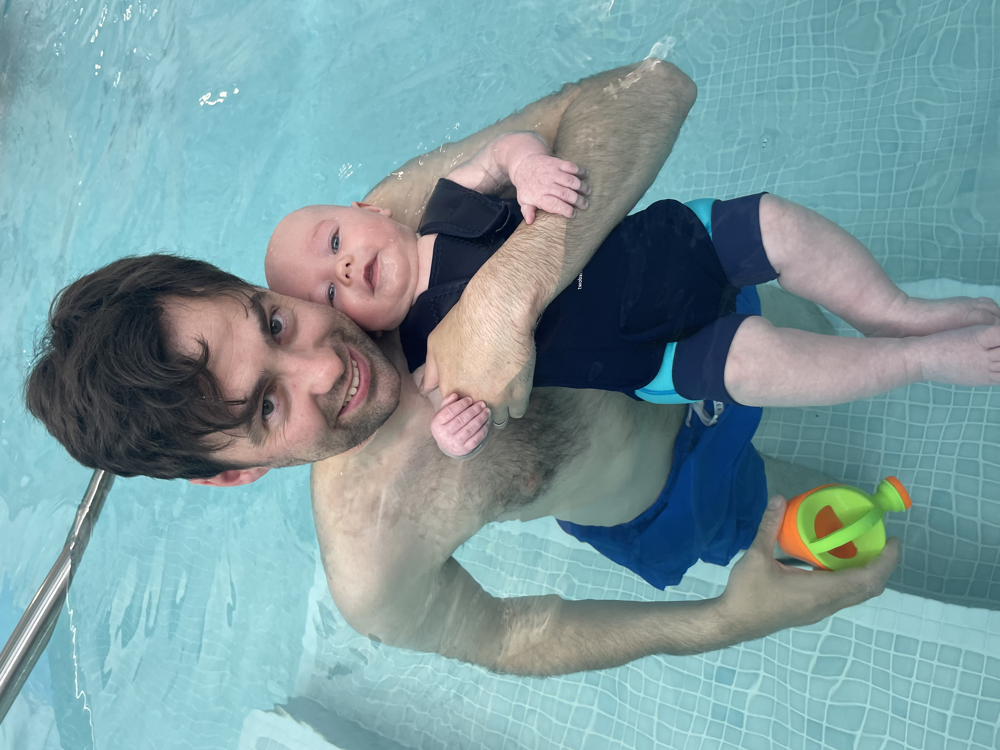

Shaun Duffy

Summary
I am a fully qualified electrician, I have been in the trade for over 10 years. Hardworker, enjoy challenging myself and learning new skills.
Education
- North West Training Council - NVQ Level 3, Electrotechnical Installation.
Work Experience
- Electricican - Cammell Lairds
December 2012 - May 2018
- Excellent expertise in shipboard electrical systems, including transformers, distribution panels, switchgear and rotating electrical
equipment.
- Installling, terminating and troubleshooting a wide variety of electrical
connection types.
- Conducted electrical circuit testing for safety and functionality.
- Installed and monitored electrical equipment and wiring.
- Performed various workshop and field tasks as required.
- Facilities Maintenance Engineer - ACC Liverpool
May 2018 - January 2021
- Provided high level and in-depth technical support by resolving inquiries by phone, e-mail and web, in manner and timeframe
consistent with department and team service levels and goals.
- Read and interpreted blueprints, technical drawings, schematics and computer-generated reports.
- Operated and carried out thorough maintenance of switchboard for optimal equipment performance and safety.
- Organised and directed maintenance shutdowns and startups.
- Maintained smooth operations of all plant and equipment through effective and efficient maintenance and testing.
- Evaluated installed electrical equipment and systems to isolate faults and implement corrective actions.
Skills
- Time management.
- Troubleshooting complex control systems.
- Electrical Installation and repair
- Domestic, Commercial and Industrial experience
Other